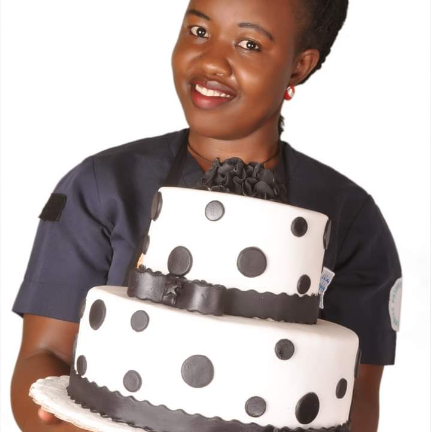
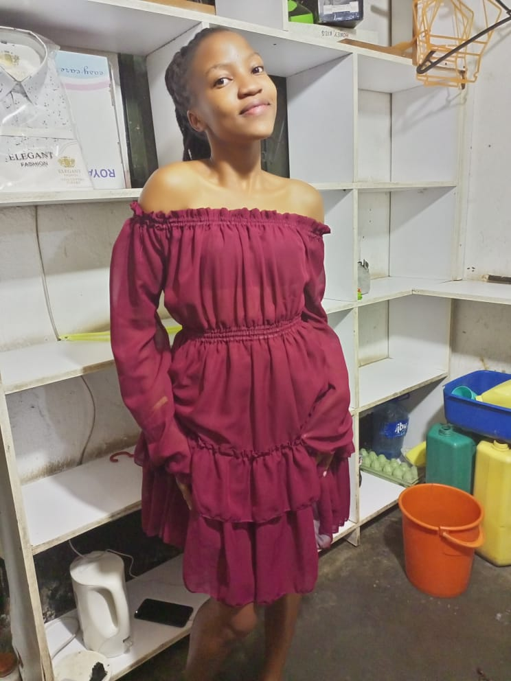

In 2010, the founders of Bazira Bakery created their firstly freshly baked cookies and buns in bweyogerere. As our success grew,
we continued to expand our menu selections by adding delicious cakes, bread, sandwiches and brownies.
we are respected today as a leading brand in the bakery of the industry.
Bazira Cakery now operates in different towns. Our bakery is also in mukono along kayunga road, mbale along Republic street
and the main branch is in bweyogerere opposit nestila hotel
Bazira Cakery the trusted heros to bake your day.

ABOUT US
Bazira Cakery started baking in 2010 for the reason I felt strongly about setting up a bakery to serve her customers in different societies
After YMCA, I worked with william Cakes in bweyogerere until I couldn't bear it any longer. I began by making capcakes and daddies
This led me to handing in my notice, moving home and setting up a home baking business called Bazira Cakery(named after archieving my goal)
slowly by slowly Bazira Cakery went on baking buns, all kinds of cake, and employed more employees
OUR LOCATION
Our mukono branch
we are located 20km away
from town along kayunga road
Our bweyogerere branch
we are located 20km away
from town along Kampala road
Our mbale branch
we along Republic Street
Opposite BAM shopping center
Team Members
Manager(Namarome Recheal)
Brand Ambassador(cute_sterish)
Ass.manager(Mutesasira Ezra)

Cashier(khainza christine)